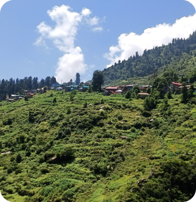
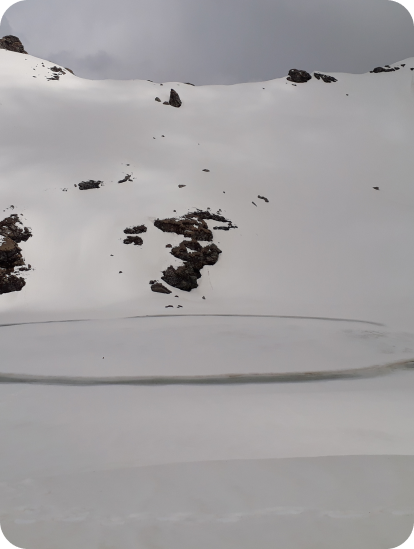

Pin Parvati Trek
Altitude:
17,450 Ft
Duration: 12 Days
Parvati Valley is situated in the northern Indian state of Himachal
Pradesh. From the confluence of the Parvati River with the River
Beas, the Parvati Valley runs eastwards, through a steep-sided
valley from the town of Bhuntar, in the Kullu valley.
The trek leads to Mantalai lake which is the source of Parvati river.
The lake is formed by the melting of snow from the nearby mountains and glaciers.
It is a difficult trek and not ment for seasoned trekers.

Malana Trek
Altitude:
12,007 Ft
Duration: 6 Days
Malana is a beautiful and picturesque village situated in the
Manikaran valley. Malana stands out as an autonomous self-
sufficient unit whose inhabitants claim Greek ancestry. They trace
their ancestry to one of the lost armies of Alexander the Great, who
tried to unsuccessfully invade India in the 56BC.
The highlight of the trek is the Chandrakhani pass which has to be crossed to reach the village.
This is a moderate trek.

Bhrigu lake
Altitude:
14,107 Ft
Duration: 3 Days
Bhrigu is a prominent holy lake of the Kullu Region, lying east to
the famous Rohtang pass. As per legend, the great Indian sage Bhrigu
Rishi had meditated here and the local gods of Kullu Region took
holy dip in its sacred waters. Famous amongst them was Guru
Vashisht, who used to travel to the lake once in two to three years.
The trek starts from Gulaba which is a 22 km away from Manali.
It is a beautiful trek which gives you glimpses of snow-capped peaks.
It is of moderate grade.

Hamta Pass Trek
Altitude:
14,009 Ft
Duration: 3 Days
Hamta pass trek is most loved and cherished by adventure lovers for
two reasons- first -the Kodak moments it provides and second being
its less difficulty level. This trek provides you the opportunity to
peep into the unique landscape the Himalayas offer. It gives you an
unique experience of crossing lush green valleys of Kullu to arrive
at towering mountains.

ChandraTal Trek
Altitude:
14,002 Ft
Duration: 5 Days
The ChandraTal trek will offer you an ultimate experience which is
similar to the experience of a voyage to the moon. You will pass
through two high mountain ranges named Moulkila and Chandrabhaga.
There is a legendary story associated with this lake. It is believed
that this lake is located at a place from where the chariot of the
god Indra picked up Yudhishthira.
ChandraTal is a beautiful lake and is often compared to Panggong lake, the water of the lake changes
hues during the day.
Trek to ChandraTal lake is a life-time experience.

Sar Pass Trek
Altitude:
13,845 Ft
Duration: 5 Days
The Sar Pass is in Parvati Valley of Kullu district of Himachal
Pradesh, a state of India. Sar, in the local dialect, means a lake.
Sar Pass is a perfect trek for beginners. It's suitable for those
who want to experience all kinds of terrain. Forests, meadows,
quaint villages, or snow-covered mountain.
This trek begins from Kasol, and is famous for picture perfect moments.

Rani Sui Trek
Altitude:
11,154 Ft
Duration: 4 Days
This is a moderate trek marked with scenic beauty. This trek is
admired by nature lovers because of presence of diverse flora and
panoramic views. It is a good getaway from hustle bustle of city and
at the same time provides mental relaxation. Khanpari which is at
the height of 4000m is the maximum height which one gains in the
trek.

Hamta Circle Trek
Altitude:
11,154 Ft
Duration: 5 Days
The trek starts from Jagathsukh, one of the largest villages in the
Kullu Valley. This is a beautiful trek which leads through meadows and thick pine forests.
It also gets full view of Manali from a height. The best part is that it is a easy trek and
gives glimpses of some famous peaks.

Deo Tibba Trek
Altitude:
14,698 Ft
Duration: 6 Days
The trek to Deotibba Base Camp is one of the most beautiful and
picturesque trek in the country. Taking you through beautiful
meadows, attractive rhododendrons, silver birch and scented
junipers, it is a treasure trove for everyone. In addition to all
the offerings, camping around the towering peaks, lush valleys and
gurgling water bodies make this trek an amazing experience.
It is of moderate grade.